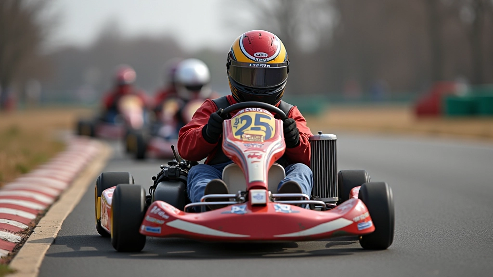
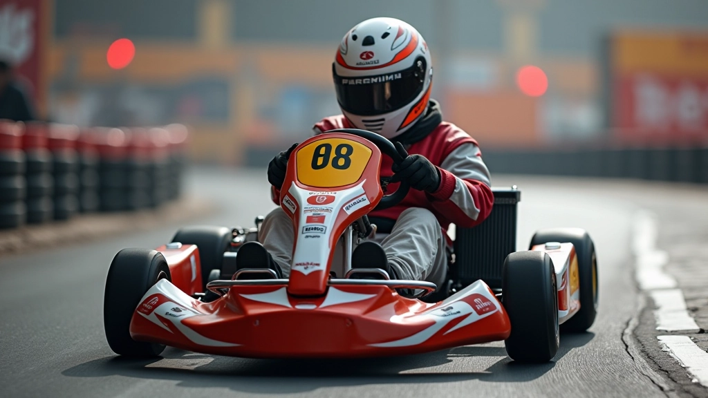
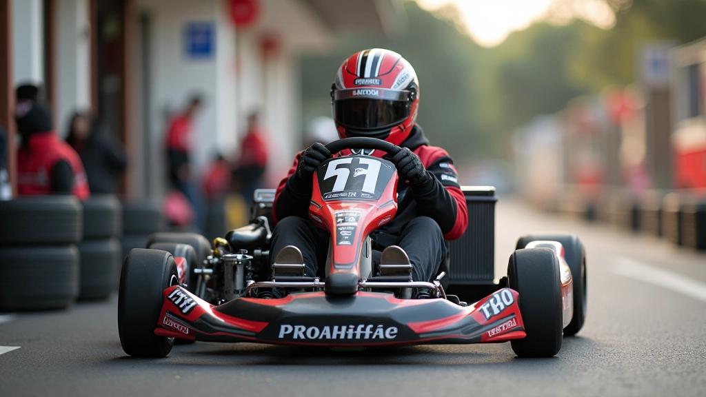

قياس وضبط ضغط الإطارات بشكل صحيح
خطوات عملية لقياس الضغط باستخدام مقياس دقيق وفهم التأثيرات على التعامل والسرعة
كيفية تعديل إعدادات الكارت حسب حالة المسار الرطبة أو الجافة والتغيرات المناخية المختلفة
الطقس والمسار ليسا مجرد تفاصيل ثانوية — هما يحددان كل شيء. درجة الحرارة، الرطوبة، هطول الأمطار، حتى نوع سطح المسار الأسفلت. كل هذا يغير طريقة عمل الكارت بشكل جذري. الإطارات التي تعطيك أفضل أداء في يوم جاف قد تكون سيئة تماماً عندما يكون المسار رطباً.
لذلك لا بد من فهم هذه الظروف والتكيف معها. سواء كنت تتنافس في بطولة أو تتدرب في جلسة عادية، يجب أن تتعلم كيف تقرأ الطقس والمسار وتعدّل إعداداتك بسرعة. هذا هو الفرق بين السائق المتوسط والسائق الجيد فعلاً.

على مسار جاف، الإطارات تلتصق بالسطح بشكل مباشر. الاحتكاك عالي جداً. تستطيع الكبح بقوة أكبر، والتسارع بشكل أسرع، والدوران بزوايا أكثر حدة. لكن هذا يعني أيضاً أن الإطارات تسخن بسرعة أكبر. لذلك في اليوم الجاف الحار، عليك أن تكون حذراً من ارتفاع درجة حرارة الإطارات بسرعة كبيرة.
أما المسار الرطب فهو مختلف تماماً. هناك طبقة ماء بين الإطار والسطح. الاحتكاك أقل بكثير. السيارة تنزلق أكثر. عليك أن تكون أكثر لطفاً في كل حركاتك — الكبح، التسارع، الدوران. إذا حاولت تطبيق نفس الضغط والسرعة التي تستخدمها على المسار الجاف، ستفقد السيطرة على الفور. الإطارات الرطبة تحتاج إلى مزيد من المسافة للكبح والتسارع.

عندما تتغير الظروف، لا تبقى إعداداتك ثابتة. أول شيء تغيره هو ضغط الإطارات. على المسار الجاف، قد تستخدم ضغط أعلى قليلاً — حوالي ١.٨ إلى ٢.٠ بار. هذا يقلل سطح الاحتكاك ويسمح للكارت بأن يكون أسرع. لكن عندما يصبح المسار رطباً، تقلل الضغط قليلاً — ربما إلى ١.٦ أو ١.٧ بار. الضغط الأقل يعني سطح اتصال أكبر، مما يساعد على التمسك بالمسار الرطب.
ثانياً، تعديل زاوية الجناح الأمامي. في المسار الجاف، قد تستخدم زاوية أقل لتقليل المقاومة. في المسار الرطب، زد الزاوية قليلاً لزيادة الثبات والقوة الدفعية. ثالثاً، انتبه لارتفاع الكارت. إذا كان المسار رطباً جداً، قد تحتاج إلى رفع الكارت قليلاً لتجنب ملامسة الماء المتجمع على السطح.
معلومات تعليمية
هذه الإرشادات تقدم معلومات عامة عن تأثير ظروف المسار والطقس على أداء الكارت. كل مسار وكل كارت فريد، والظروف المحددة قد تتطلب تعديلات مختلفة. يفضل دائماً استشارة مدرب متخصص أو ميكانيكي خبير قبل إجراء تغييرات كبيرة على الإعدادات.
درجة حرارة المسار والهواء تحدث فرقاً كبيراً. في يوم حار جداً، المسار يكون أسخن، والإطارات تسخن بسرعة. قد تصل درجة حرارة الإطار إلى ٩٠ درجة مئوية أو أكثر. هذا يعني أن الإطار يفقد الالتصاق. يصبح "زلقاً" جداً. من ناحية أخرى، في يوم بارد، الإطارات لا تسخن بسرعة كافية. قد لا تصل إلى درجة الحرارة المثالية حتى تنهي عدة لفات. لذلك في الأيام الباردة، قد تحتاج إلى جلسة إحماء أطول قبل أن تبدأ بدفع الكارت بقوة.
قياس درجة حرارة المسار مهم جداً. استخدم مقياس حراري متخصص — بندقية الأشعة تحت الحمراء هي الأفضل. قس درجة الحرارة في مناطق مختلفة من المسار. قد تكون هناك اختلافات بسيطة بين الظل والشمس. هذه الاختلافات تؤثر على السلوك الإجمالي للكارت.

قبل الخروج إلى المسار، خذ دقيقة لفحص الظروف. هل المسار جاف أم رطب؟ ما درجة حرارة الهواء والمسار؟ هل هناك رياح قوية؟ اكتب هذه الملاحظات.
خذ جولة اختبار لطيفة. شعر كيف يتصرف الكارت. هل الإطارات تعطيك ثقة؟ أم أنها زلقة جداً؟ بناءً على هذا الإحساس، قرر ما إذا كنت تحتاج إلى تعديل ضغط الإطارات.
لا تغير كل شيء في آن واحد. غيّر شيئاً واحداً فقط — الضغط أو زاوية الجناح — ثم اختبر مرة أخرى. لاحظ الفرق. استمر في التعديل حتى تشعر بالراحة.
الظروف تتغير طوال اليوم. قد يجف المسار الرطب أثناء السباق. قد تزداد السحب. ابقَ منتبهاً وكن مستعداً لإجراء تعديلات إضافية إذا لزم الأمر.
فهم ظروف المسار والطقس ليس خياراً — إنه ضرورة. السائقون الجيدون يراقبون الطقس ويقرأون المسار مثل الكتاب. يعرفون متى يكون المسار سريعاً ومتى يكون خطيراً. يتكيفون بسرعة. هذه المهارة تأتي من التدريب والممارسة والاهتمام بالتفاصيل.
ابدأ بفهم الفرق الأساسي بين المسار الجاف والرطب. تعلم كيفية قياس درجة الحرارة. جرب تعديلات مختلفة وشاهد كيف تؤثر على أدائك. كل يوم على المسار هو درس جديد. كل جلسة تدريب هي فرصة لتحسين قراءتك للظروف. هذا هو الطريق نحو أداء أفضل.